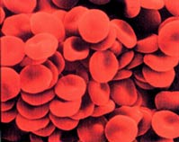
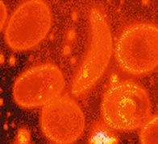
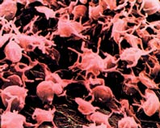
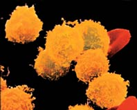
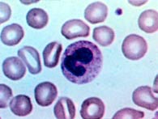
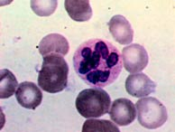
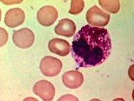
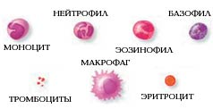
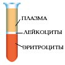
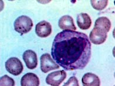

О чем расскажет капля крови
Анализ крови - один из наиболее распространенных методов медицинской диагностики. Всего лишь несколько капель крови позволяют получить важную информацию о состоянии организма.
Кровь - вид соединительной ткани, или, образно говоря, "жидкая ткань". Она составляет около 7 процентов от массы тела. У взрослого мужчины объем крови равен приблизительно 5,9 литра, у женщины - 3,9 литра. Жидкая часть крови называется плазмой, а в ней во взвешенном состоянии находятся клеточные элементы - эритроциты, лейкоциты и тромбоциты.
*
Красный цвет крови обусловлен эритроцитами. Триста лет назад эритроциты назвали "красными кровяными шариками". Впервые их обнаружили в крови лягушки. В 1673 году голландский естествоиспытатель А. Левенгук увидел такие же шарики в крови человека. Двести лет люди пребывали в полнейшем неведении о назначении этих клеток. И лишь во второй половине XIX века исследования ученых, в том числе и русского физиолога И. М. Сеченова, помогли выяснить, зачем же эти "шарики" нужны. Здесь следует уточнить, что у человека и других млекопитающих эритроциты похожи вовсе не на шарики: они имеют форму двояковогнутых, то есть приплюснутых посредине, круглых дисков. Исключение - верблюд и олень, у них эритроциты овальные.
Главная задача эритроцитов - снабжение тканей кислородом и перенос углекислого газа обратно от тканей к легким. В крошечной капельке крови объемом в 1 кубический миллиметр содержится около 4 млн эритроцитов. В бланке для анализа крови указаны границы нормы в расчете на 1 литр: 4-5x1012 эритроцитов - для мужчин и 3,9-4,7x1012 - для женщин. Интересно, что у новорожденных содержание эритроцитов в первую неделю жизни гораздо выше, до 7,5x1012 на 1 литр. Это объясняется большой интенсивностью обменных процессов, возникающих сразу после рождения (малыши в это время по интенсивности физиологического обмена похожи на низкоорганизованных млекопитающих). Но пройдет всего месяц, и содержание эритроцитов в крови младенцев снизится до уровня взрослого. Обратная картина наблюдает ся у людей пожилого возраста. Обменные процессы замедляются, возникает возрастной остеосклероз: красный костный мозг - производитель эритроцитов - местами заменяется на желтый (жировой), и количество эритроцитов уменьшается. Поэтому у пожилых людей в норме может содержаться приблизительно 3,8x1012 эритроцитов на 1 литр крови.
Главный химический компонент эритроцита - дыхательный пигмент гемоглобин. Он, собственно, и осуществляет перенос кислорода из легких к тканям и, наоборот, углекислоты от тканей к легким. Для того чтобы хорошо себя чувствовать, мужчинам необходимо 130-160 г/л гемоглобина, а женщинам - 120-140 г/л. У новорожденных нормальное значение гемоглобина 110-145 г/л.
Падение концентрации эритроцитов и гемоглобина ниже нормы называется анемией или малокровием. Первые симптомы анемии: слабость, быстрая утомляемость, одышка, сердцебиение, бледность. Причины возникновения анемии могут быть разными. Это и потеря крови, и недостаток железа или дефицит витамина B12 в организме. Сейчас эти виды анемий часто встречаются у детей и пожилых людей. Справиться с начинающейся железодефицитной анемией помогут отварная фасоль, чернослив и обыкновенная гречневая каша. Много витамина B12 содержится в печени крупного рогатого скота и свиней. Привычные анемии наблюдаются у жителей высокогорных районов и курильщиков. Число эритроцитов уменьшается при ревматоидных артритах, а также при голодании и употреблении вегетарианской пищи. Поэтому прежде, чем принять решение о переходе к "более здоровому образу жизни", посоветуйтесь с врачом. Катастрофическое снижение количества эритроцитов (до 1?1012 на 1 л) возникает при лейкозах и метастазах злокачественных опухолей. Увеличение гемоглобина и числа эритроцитов наблюдается у людей с врожденным пороком сердца и хроническим обструктивным бронхитом. Такие больные нуждаются в постоянном диспансерном наблюдении.
В норме кровь постоянно обновляется. Молодые эритроциты называют ретикулоцитами. Нормальная доля ретикулоцитов в общем количестве эритроцитов составляет 2-10 промилле (1 промилле равно 0,1%). Доля ретикулоцитов отражает регенеративные способности костного мозга; ее повышение свидетельствует о наличии анемий в кризисной форме, наблюдается на фоне лечения витамином B12, при сильных кровопотерях и в других случаях, когда организм пытается восстановить недостачу эритроцитов в крови. Снижение количества ретикулоцитов отмечается при анемиях с неблагоприятным прогнозом, при снижении восстанавливающей способности крови.
*
Биография тромбоцитов насчитывает не более 150 лет. В 1880-х годах их подробно описал итальянский ученый Биццоцеро (раньше их даже называли бляшки Биццоцеро). В микроскоп тромбоциты выглядят как овальные или округлые гладкие тельца. Они способны к агрегации, то есть слипанию, и благодаря адсорбции удерживают на своей поверхности факторы свертывания крови. Эти два свойства обуславливают активное участие тромбоцитов в процессе свертывания крови. В 1 литре нормальной крови насчитывается 180-320 млрд тромбоцитов. Величина эта весьма непостоянна и зависит от тонуса сосудов, состава пищи, фазы менструального цикла у женщин. У спортсменов и людей, занятых тяжелым физическим трудом, наблюдается тромбоцитоз, то есть увеличение количества тромбоцитов. Организм отвечает тромбоцитозом на ожоги и кровопотери, на введение адреналина и травмы мышц. Сильное увеличение числа тромбоцитов может свидетельствовать о наличии опухолевых заболеваний. Нехватка тромбоцитов в крови может быть вызвана ответной реакцией организма на введение лекарственных препаратов (например, гистаминов). Надо отметить, что применение сильнодействующих лекарств вызывает побочные действия, поэтому, проводя курсовое лечение, необходимо контролировать состояние организма в первую очередь по показателям крови. Обычно низкий уровень тромбоцитов свидетельствует об иммунных заболеваниях. Первичный симптом - болезненные синяки, особенно у детей. У малышей синяки и ссадины появляются часто, но прежде, чем ругать ребенка, все же спросите, отчего возник кровоподтек, и, если видимой причины нет, немедленно покажите ребенка врачу. Кроме синяков могут возникнуть и необоснованные носовые и другие кровотечения. Если в клиническом анализе крови при нехватке тромбоцитов еще и снижены показатели по эритроцитам, вероятнее всего, врач констатирует анемию, связанную с недостатком витамина B12.
*
Представление о лейкоцитах сформировалось приблизительно 100 лет назад, одновременно с развитием учения о крови и кроветворении. Эти удивительные "клетки-киллеры" способны самостоятельно передвигаться в токе крови с помощью псевдоножек. Они приближаются к скоплению болезнетворных микробов, захватывают и переваривают их. Открыл такие возможности лейкоцитов великий русский физиолог И. И. Мечников. Его исследования легли в основу развития иммунологии. Главная функция лейкоцитов - защитная. Они обеспечивают невосприимчивость организма к различным факторам (клеткам, веществам), которые несут чужеродную генетическую информацию. Но высокая активность лейкоцитов может нанести и вред. Например, на пересаженные органы лейкоциты реагируют так же, как на болезнетворные микроорганизмы, - попросту разрушают их. И здесь врачам приходится искусственно подавлять лейкоцитарную активность.
В норме кровь содержит 4,0-9,0 млрд лейкоцитов в расчете на 1 литр. Из них нейтрофилов палочкоядерных - 1-6%, сегментоядерных - 47-72%, эозинофилов - 0,5-5%, базофилов - 0,5-1%, лимфоцитов - 19-37%, моноцитов - 3-11%. Все перечисленные "непонятные" термины обозначают лейкоциты разных типов и их долю в общем количестве лейкоцитов. Увеличение содержания лейкоцитов говорит о наличии в организме воспалительного процесса или инфекции (например, пневмонии или стоматита). Количество нейтрофилов может возрастать при эмоциональной и физической нагрузке, переходе из горизонтального положения тела в вертикальное (особенно после длительного сна), при обильной белковой пище, во второй половине беременности. Такое повышение физиологически нормально и обычно быстро проходит. В других случаях увеличение числа нейтрофилов говорит о развитии острой инфекции или гнойного заболевания.
Весна радует всех, кроме аллергиков. Часто в это время у них начинается сенная лихорадка, течет из носа. Реакция организма проявляется и в повышении содержания эозинофилов в крови. Число эозинофилов увеличивается при бронхиальной астме, кожной и лекарственной аллергии.
Ежегодно, борясь с очередной эпидемией гриппа, врачи отмечают в анализах крови больных частичный лимфоцитоз, то есть возрастание числа лимфоцитов. Такой же признак характерен для заболеваний эндокринной системы (диабет, базедова болезнь). Сильный лимфоцитоз наблюдается при краснухе, коклюше, ветряной оспе. Уменьшение общего числа лимфоцитов, или лейкопения, - очень неприятный клинический фактор. Этот грозный синдром свидетельствует об общем снижении защитных свойств организма. Тяжелая лейкопения возникает при лучевой болезни (например, она наблюдалась у всех чернобыльцев), а также при тяжелых вирусных и бактериальных заболеваниях с неблагоприятным прогнозом. Исследова ние количества лейкоцитов в динамике помогает оценить течение патологического процесса, спрогнозировать возможности осложнений и исход заболевания, выбрать наиболее подходящее лечение.
*
И, наконец - скорость, или реакция, оседания эритроцитов (СОЭ). Норма для мужчин - 2-10 мм/ч, для женщин - 2-15 мм/ч. Не вдаваясь в подробности этого физиологического процесса, отмечу, что увеличение СОЭ связано с наличием острых воспалительных процессов, с инфарктом миокарда. Уже знакомые нам формы малокровия тоже сопровождаются повышением СОЭ на фоне снижения числа эритроцитов (железодефицитная анемия). Сильно увеличивается СОЭ при раковых заболеваниях. Уменьшение значения СОЭ наблюдается у больных с повышенным количеством эритроцитов, а также при активном гепатите и циррозе печени. СОЭ - показатель, который нормализуется медленнее, чем другие. Поэтому не расстраивайтесь, если после болезни в вашем анализе крови все показатели уже в норме, а СОЭ чуть увеличена.
*
Клинический анализ периферической крови иногда дает возможность сразу определить направление дальнейшего диагностического поиска и поставить предварительный диагноз. В амбулаторных условиях часто ограничиваются определением лейкоцитов, гемоглобина и СОЭ, но это не дает полной картины состояния крови, поэтому пациент вправе потребовать провести полное клиническое исследование в соответствии с бланком анализа.
Не только врачам-лаборантам, но и самим пациентам полезно знать некоторые правила взятия крови на анализ. Морфология крови подвержена суточным колебаниям, поэтому исследования лучше проводить в одно и то же время, обычно утром натощак или через 1 час после легкого завтрака. Не рекомендуется брать кровь после физической или умственной нагрузки, приема лекарств, рентгеновских или ядерно-магнитных исследований, физиотерапевтических процедур. Естественно, в экстренных случаях этими условиями можно пренебречь. Как правило, для исследования берут капиллярную кровь из мякоти концевых фаланг пальцев рук, иногда - мочки уха, а у грудных детей - из подошвенной поверхности пятки или большого пальца ноги. Необходимое условие забора крови - одноразовый инструмент. Стерильная одноразовая игла должна быть вынута из герметичной упаковки непосредственно перед взятием крови. Одноразовые иглы для клинического анализа крови появились в российской медицинской практике не так давно. До сих пор не во всех медицинских учреждениях используют одноразовый инструментарий. А ведь, по статистике , до 30% заболеваний вирусным гепатитом возникает из-за заражения в медицинских учреждениях. Право больного - потребовать одноразовый медицинский инструмент. Если же в лечебном учреждении такового нет, лучше приобрести все необходимое самостоятельно в аптеке.
Нельзя брать кровь рядом с воспаленными или поврежденными участками кожи. Место предполагаемого прокола должно быть теплым. Перед процедурой кончик пальца можно опустить в теплую воду или слегка помассировать. При взятии крови из холодного пальца может быть получен неверный результат. Кожу в предполагаемом месте прокола обрабатывают 70%-ным этиловым спиртом или антисептическим раствором, дают высохнуть, после чего осуществляют манипуляцию. Первая капля крови снимается ватным тампоном. Сильно давить на фалангу не следует, достаточно легкого нажима стерильным тампоном. После окончания процедуры место прокола протирают спиртом или раствором. Ватный тампон надо подержать несколько минут до полной остановки выделения крови.
Ю. СИГОРСКАЯ.
*

Эритроциты похожи на сплюснутые с боков диски.

При некоторых заболеваниях крови эритроциты приобретают серповидную форму.

Тромбоциты - мелкие клеточные элементы, обеспечивающие способность крови к свертыванию.

Лейкоциты имеют много разных форм, но отличить их внешне нелегко. Так выглядят под микроскопом лабораторные мазки, содержащие некоторые виды лейкоцитов.

Палочкоядерный нейтрофил.

Сегментоядерный нейтрофил.

Эозинофил.

Вид и относительный размер основных клеточных элементов крови. Самые мелкие - тромбоциты , диаметром примерно 3 мкм. Эритроциты имеют диаметр около 7 мкм. Размер лейкоцитов зависит от их вида и составляет от 8 до 20 мкм. Самые крупные клетки (до 50 мкм) - макрофаги, образующиеся из моноцитов.

Если пробирку с кровью поместить в центрифугу, содержимое расслоится. Эритроциты занимают нижнюю часть пробирки, затем идет тонкая прослойка лейкоцитов. Жидкая часть крови, плазма, скапливается в верхней части и занимает около 55% объема. В плазме растворены углеводы, белки, жиры, гормоны, витамины. На долю клеточных элементов приходится примерно 45% объема.

Моноцит.

(с) Мед. справочник., Регент.

(с) Библиотека о настоящих Вампирах
realvampires.do.am
[Наверх]